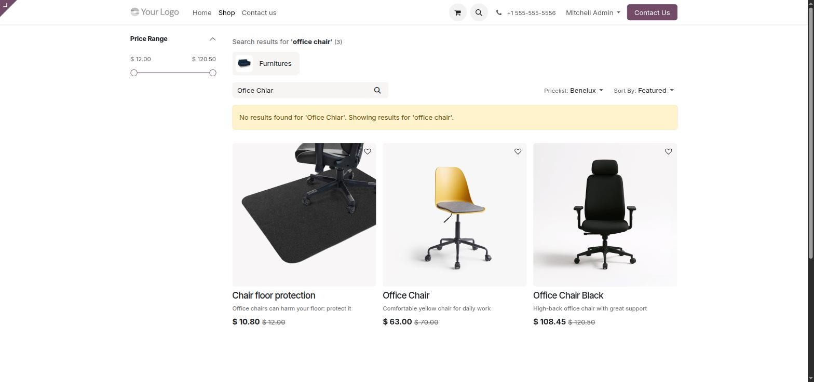
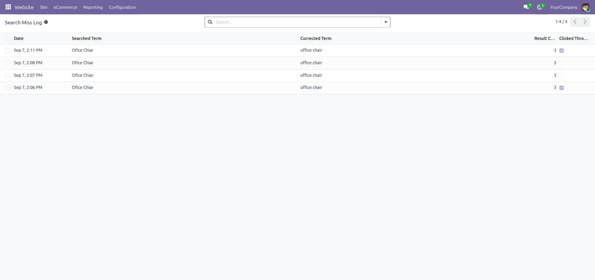
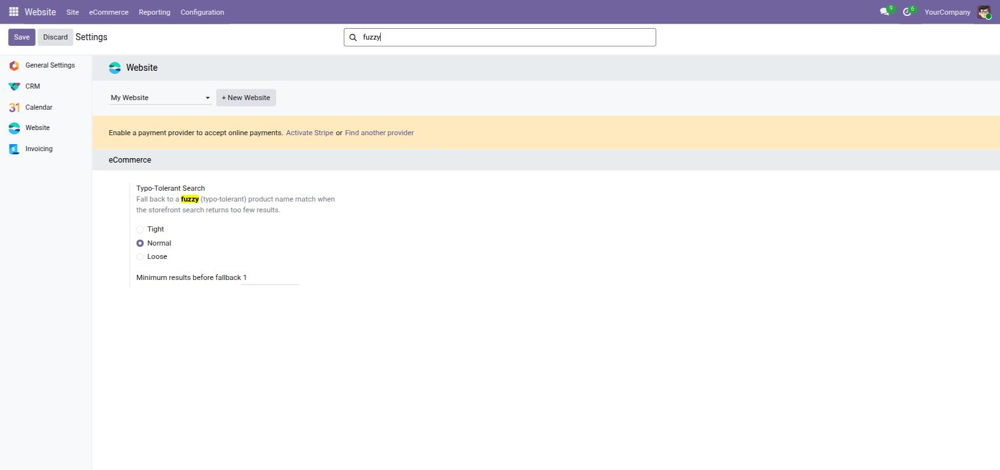

Odoo's storefront search already tolerates a single-word typo, but it gives up the moment your query has more than one word. This module fixes that, adds a sensitivity dial, and logs every near-miss so you can see what customers are actually searching for.
Type something like "Ofice Chiar" into the storefront search — two typos, two words. Native Odoo would show zero results and stop there. This module notices the exact search returned nothing, retries word-by-word with fuzzy matching, and shows the corrected results with a clear "Showing results for..." note so nothing is silently substituted.

Website → Reporting → Search Miss Log records the term as typed, what it was corrected to, how many results came back, and whether the visitor actually clicked into a result. Use this to spot recurring near-misses worth fixing in your product naming, or to confirm the fuzzy fallback is actually converting.

Search the settings page for "fuzzy" to jump straight to it. Sensitivity controls how loose the match is — Tight only fixes near-exact typos, Loose catches more but risks less-relevant results on a large catalog. Minimum results before fallback controls when it kicks in at all; the default of 1 means it only fires on a genuine zero-result search, never on a query that already found something.
